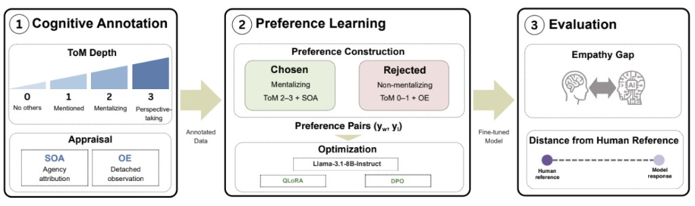
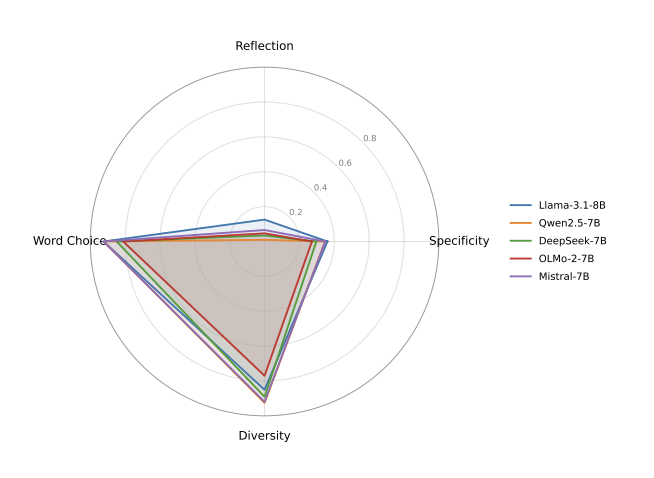
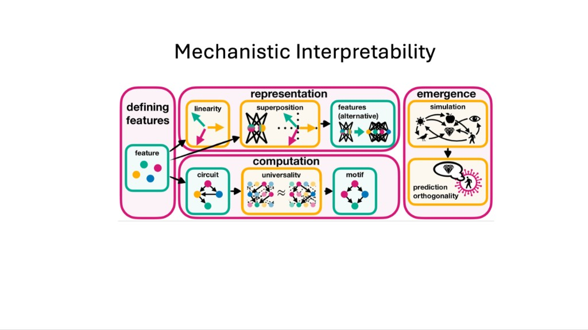

01
Affective
Computing
Understanding how computational systems perceive, represent, and respond to human affect.
COGNITIVE SCIENCE · ARTIFICIAL INTELLIGENCE
M.S. Student in Cognitive Science
Seoul National University
I study how artificial intelligence understands and represents human emotions, empathy, and social interaction — with a particular interest in the internal representations of large language models.

Empathic AI · LLM representations · Human-AI interaction
RESEARCH INTERESTS
Understanding how computational systems perceive, represent, and respond to human affect.
Studying what makes an AI response feel context-aware, socially appropriate, and genuinely empathic.
Probing internal representations to examine how language models encode contextual and emotional information.
Exploring how people build trust, rapport, and social connection with intelligent systems and robots.
SELECTED WORK
Full paper accepted to the 2026 IEEE International Conference on Robot and Human Interactive Communication (RO-MAN), Special Session.

Accepted as a full paper at CogSci 2026.

I am studying whether mechanistic interpretability (MI) of internal representations can help align language models with human values, and analyzing model internals to examine how LLMs actually understand human emotion.

RECENT NEWS
GET IN TOUCH
I’m always open to research conversations and collaborations around human-centered and interpretable AI.
jaehyeong8121@snu.ac.kr ↗